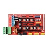

| DIYelectronics | Wanhao | Anycubic | Tevo | Creality |
|---|---|---|---|---|
 |
 |
 |
||
| Build guide | Wanhao i3 | i3 Mega | Tarantula Prusa i3 | Creality CR10 |
| DIY i3 Build doc | Duplicator i3 Plus | Kossel Delta | Black Widow | |
| Duplicator 6 | Little Monster |
| RAMPS Guide | 2WD Arduino car |
|---|---|
|  |  |
| RAMPS programming guide | 2WD robot build guide |